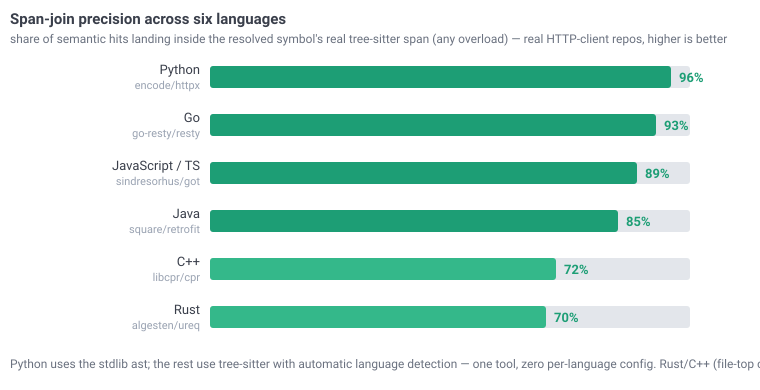

Headline: mean over 6 queries (send · auth · redirects · decoding · cookies · timeouts) on encode/httpx (2,101-node graph). Each query orients an agent to a code area; tokens = what reaches the model's context (≈ chars/4). Validated across JS/TS · Go · Java · Rust · C++ ↓
| Approach | Tokens | Calls | Structure | Semantic | Hidden links |
|---|---|---|---|---|---|
| Naive grep + read | 61,836 | ~14 | — | — | 0 |
| semble alone | 1,613 | 1 | — | ✓ | 0 |
| graphify alone | 1,107 | 1 | ✓ | — | 0 |
| semble + graphify (separately) | 2,721 | 4 | ✓ | ✓ | 0 |
| codegraph-mcp locate | 235 | 1 | ✓ | ✓ | 7 |
| Query | naive | semble | graphify | locate | hidden |
|---|---|---|---|---|---|
| async send request | 63,497 | 1,682 | 1,175 | 268 | 8 |
| digest auth challenge | 7,533 | 1,603 | 777 | 243 | 7 |
| redirect / location headers | 82,611 | 1,613 | 1,168 | 204 | 7 |
| content decoding (gzip/brotli) | 67,120 | 1,694 | 1,177 | 189 | 5 |
| cookie jar storage | 83,001 | 1,556 | 1,170 | 220 | 7 |
| request timeout config | 67,257 | 1,532 | 1,177 | 286 | 10 |
file:line + structural neighborhood + hidden links), not raw code — you fetch the specific code only where needed. semble's ~1,600 tokens are readable code chunks; the two representations are complementary. codegraph-mcp optimizes for cheapest orientation plus the cross-check signal, then you drill in precisely.
Asked "does httpx duplicate request-sending across sync and async?", graphify_locate (live over MCP) returned seed Client._send_single_request and flagged hidden links — every production flag checked out as a genuine sync/async twin in the source:
| Flagged by locate | Verified in httpx source |
|---|---|
_send_single_request (seed + cousin) | sync Client :1001 ↔ async AsyncClient :1717 |
handle_request / handle_async_request | sync ↔ async, in every transport (base · default · asgi · mock) |
__enter__ / __aenter__ | sync ↔ async context managers (default.py) |
~500 tokens (one locate + a targeted read) surfaced a real architectural pattern — httpx's deliberate parallel sync/async implementations — that reading _client.py (~16k tokens) would. The unreachable bucket also held test files (related, not refactor targets); the distance field separates production parallels (3–4) from that noise.
The span join and the freshness check are not Python-only. I built AST-only graphs for an HTTP client in five more languages and ran the same kind of queries (send · redirects · timeout/retry · headers/auth · transport). Span-join precision = share of semble hits whose resolved node's real tree-sitter span actually contains the chunk; qualname = seeds that recover an FQN (e.g. Got.request, resty.Client.Get); locate vs grep = map tokens vs a naive grep+read for one representative query.

| Language | Repo | Graph nodes | Span-join precision | Qualname | Hidden / q | locate vs grep | Calls (locate vs naive) |
|---|---|---|---|---|---|---|---|
| Python (ast) | encode/httpx | 2,095 | 96% (52/54) | 67% | 3.2 | 272× | 1 vs 15 (0 vs 14 reads) |
| JavaScript / TS | sindresorhus/got | 556 | 89% (48/54) | 67% | 2.3 | 583× | 1 vs 9 (0 vs 8 reads) |
| Go | go-resty/resty | 1,277 | 93% (50/54) | 100% | 1.8 | 911× | 1 vs 17 (0 vs 16 reads) |
| Java | square/retrofit | 497 | 85% (46/54) | 50% | 2.3 | 217× | 1 vs 18 (0 vs 17 reads) |
| Rust | algesten/ureq | 1,444 | 70% (38/54) | 83% | 3.7 | 577× | 1 vs 22 (0 vs 21 reads) |
| C++ | libcpr/cpr | 350 | 57% (31/54) | 100% | 4.3 | 195× | 1 vs 16 (0 vs 15 reads) |
ast (exact, decorator-aware); JS/TS · Go · Java · Rust · C++ use tree-sitter with automatic language detection — one tool, zero per-language config. Precision is 57–96% across six very different graphs (350–2,095 nodes), the hidden-links cross-check keeps surfacing 2–4 candidates/query, and locate stays 195–911× cheaper than grep+read — at 1 tool call / 0 file reads where the grep-driven baseline spends 9–22 calls opening 8–21 files (89–95% fewer calls, same grep baseline as the token numbers). C++ trails at 57% and Rust at 70% — their non-contained remainder is mostly impl-block / file-top chunks where resolution to the introduced symbol is still correct (they recover qualified names at 83–100%) — not misroutes.
For one real file per repo: a comment/reformat edit must read cosmetic (no regraph), an operator/identifier edit must read structural. The tree-sitter skeleton compares every token, so an operator flip or rename is caught — while a number changed inside a license-header comment is correctly ignored.
| Language | File | Comment / reformat | Operator / rename |
|---|---|---|---|
| Python | httpx/… | cosmetic ✓ | structural ✓ |
| JavaScript / TS | as-promise/index.ts | cosmetic ✓ | structural ✓ |
| Go | circuit_breaker.go | cosmetic ✓ | structural ✓ |
| Java | AndroidMainExecutor.java | cosmetic ✓ | structural ✓ |
| Rust | agent.rs | cosmetic ✓ | structural ✓ |
| C++ | accept_encoding.cpp | cosmetic ✓ | structural ✓ |